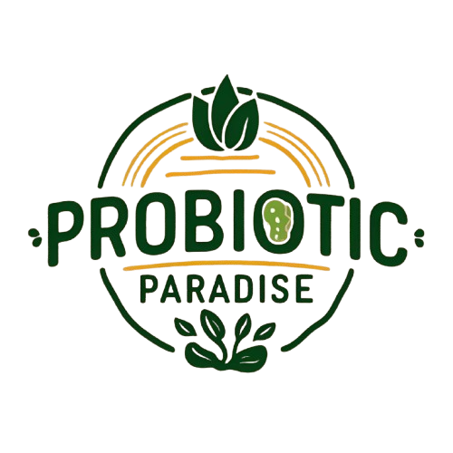
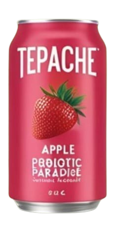
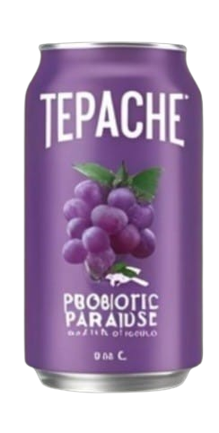
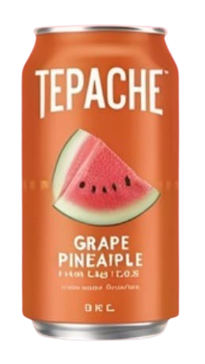
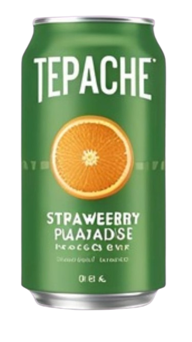
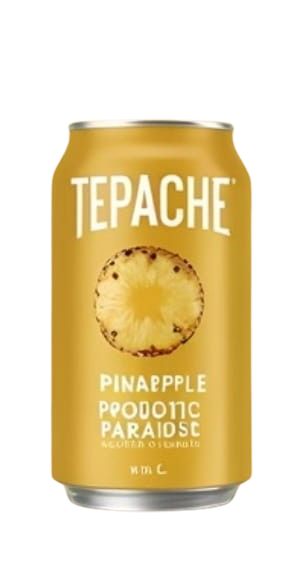

PROBIOTIC PARADISE
Welcome!
Welcome to tepache heaven! where all the tepache will make you feel like your chiling in paradise.

About Me
Probiotic Paradise came from the tepache drink it self, since tepache is a rich with probiotics and a very refreshing drink that can make you feel a sunny day by the beach or paradise. Pronounced “teh-pah-che,” this fermented beverage has been made in Mexico for centuries. Thousands of versions of Tepache exist, each varying in the spices or flavorings used but the core of it all is pineapples. We use certified organic pineapples to create our Tepache and we promise you this -- it’s delicious and unlike anything else you’ve tasted.







Probiotic Paradise, Jl no.55 Pantai Sandra Bandung
08-551627
ProbioticParadise@gmail.com
www.ProbioticParadise.com
ProbioticParadise.55
08-551627
ProbioticParadise@gmail.com
www.ProbioticParadise.com
ProbioticParadise.55